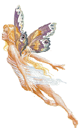
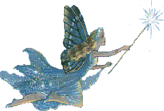

A Pretty Fairy


Myths and Magic
Fairytale Stories
When one thinks of fairy tales, they tend to think of bedtime stories and lighthearted fantasies, akin to ones that we were fed as children. However, many seem to be darker than they appear, with their sometimes disturbing themes and messages that can have long-lasting effects on how we view the structures of our own world. Indeed, most stories do seem to feature human behaviors and actions, and how they output to our human societies.
Legends Set in the Past
Some myths and legends are set in the past and might revolve around a historical figure known for doing something legendary or significant. While they are mostly set towards human figures, fairytales are a bit different. Mythology is considered its own category along with legends, but fairytales don't have the presence of divinity or gods; though supernatural entities and magic are present in all these categories. Myths have been used as explanations for past events, such as how humans came to be on our planet or changes in civilization like the Trojan War.